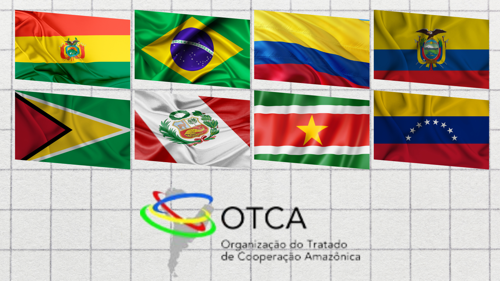
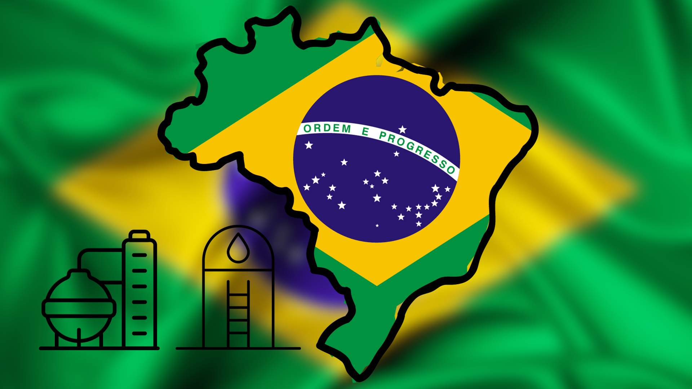
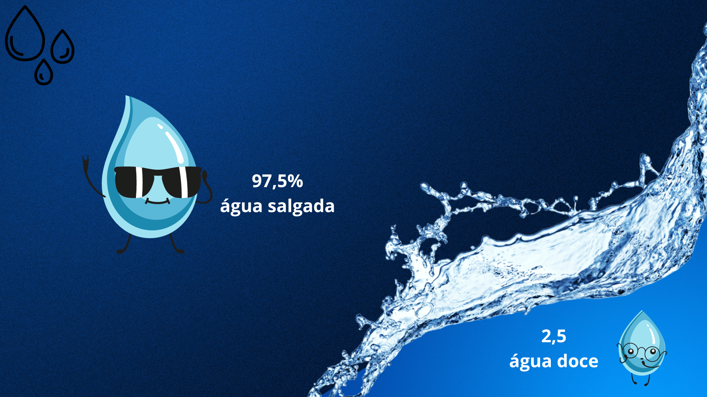
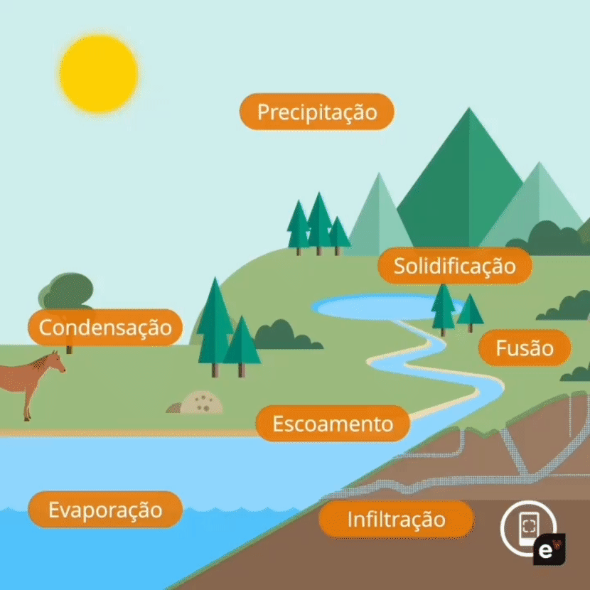

Hidrografia
A hidrografia é a disciplina da Geografia que estuda os corpos d'água do planeta, incluindo rios, mares, lagos e águas subterrâneas. Seu objetivo principal é mapear e compreender a distribuição e funcionamento desses sistemas hídricos, com ênfase nas bacias hidrográficas. Além disso, a hidrografia analisa como a água interage com o ambiente e sua importância para a sociedade.
Saiba Mais
O que é Hidrografia?
⠀A hidrografia é uma disciplina da Geografia física que se dedica ao mapeamento e estudo abrangente dos corpos hídricos que compõem o planeta Terra. Ela engloba uma variedade de formas de água, tanto superficiais (como rios, mares e lagos) quanto subterrâneas (aquíferos), e até mesmo as presentes na atmosfera. Essa área do conhecimento desempenha um papel fundamental na compreensão da distribuição e no funcionamento dos sistemas hídricos em diferentes escalas territoriais, sendo as bacias hidrográficas sua principal unidade de análise.
⠀A hidrografia não se limita apenas à simples cartografia dos corpos d'água, mas busca também analisar como a água interage com o meio ambiente, como ocorre seu ciclo de renovação e como ela pode ser utilizada de forma sustentável pela sociedade humana. É um campo de estudo abrangente e essencial para a gestão dos recursos hídricos e a compreensão das interações entre a água e o ambiente terrestre. Portanto, sua relevância transcende os aspectos puramente geográficos, influenciando também aspectos econômicos, ambientais e sociais.
Curiosidades
Tratado de Cooperação Amazônica

Em 1978, os oito países que fazem parte da bacia do rio Amazonas assinaram o Tratado de Cooperação Amazônica. Um dos objetivos é promover o desenvolvimento integrado e sustentável da bacia.
Pais com maior reserva de água doce

O Brasil tem a maior reserva de água doce do planeta - cerca de 13% de todas as fontes existentes no mundo. A maior parte desse bem preciso está nos rios da Amazônia
A distribuição de água no mundo

Os oceanos contêm cerca de 97% de toda a água da Terra, sendo que a maior parte dessa água é salgada. Apenas cerca de 3% da água do planeta é doce.
Principais elementos da Hidrografia
Ciclo da água
⠀Quando a água vai de um estado físico para outro na natureza está passando pelo processo chamado de ciclo da água. O ciclo da água, também conhecido como ciclo hidrológico, é um processo fundamental que descreve o movimento contínuo e cíclico da água entre a atmosfera, a superfície terrestre e os corpos d'água.
⠀Esse ciclo é essencial para a manutenção da vida na Terra e para a regulação dos recursos hídricos. Ele pode ser dividido em várias etapas interligadas, que são:
Evaporação
- A radiação solar aquece a água em rios, lagos, mares e oceanos, fazendo com que ela se transforme em vapor.
- O vapor de água sobe para a atmosfera, tornando-se parte da umidade do ar.
Condensação:
- À medida que o vapor de água sobe na atmosfera, ele encontra regiões mais frias e, consequentemente, se resfria.
- O resfriamento causa a condensação do vapor de água em pequenas gotículas de água.
- Essas gotículas se agrupam para formar nuvens.
Precipitação:
- Quando as gotículas de água nas nuvens se tornam grandes o suficiente, elas caem de volta para a superfície terrestre na forma de chuva, neve ou granizo.
- A precipitação é uma das formas como a água retorna à Terra.
Infiltração
- Parte da água da precipitação penetra no solo, infiltrando-se através das camadas do solo e das rochas.
- Essa água pode ser armazenada nas camadas subterrâneas, alimentando aquíferos e lençóis freáticos, ou fluir para os cursos de água subterrâneos.
- A água que não é absorvida pelo solo ou que excede a capacidade de infiltração flui sobre a superfície da terra.
⠀Parte da água que retorna à superfície não infiltra nos solos e rochas. Essa porção escoa pela superfície e abastece diretamente cursos de água, como rios e lagos. O escoamento é fundamental para manter o regime dos rios que abastecem as cidades e a zona rural.
Transpiração:
- As plantas absorvem água do solo através de suas raízes.
- Essa água é transportada até as folhas das plantas, onde é liberada para a atmosfera na forma de vapor, em um processo chamado transpiração.
- A transpiração das plantas contribui para a umidade atmosférica.
⠀O
ciclo da água é um processo contínuo e interconectado que desempenha um papel fundamental na regulação do clima, na distribuição de água doce e na manutenção dos ecossistemas terrestres e aquáticos. Ele também é crucial para o abastecimento de água potável, a agricultura, a produção de energia hidrelétrica e muitos outros aspectos da vida humana e natural.

Bacia hidrográfica
⠀Uma bacia hidrográfica, também conhecida como bacia de drenagem, é uma unidade geográfica que desempenha um papel fundamental na captação e gestão das águas pluviais que fluem através da chamada "rede de drenagem" ou rede hidrográfica. Essa rede é composta por cursos d'água, como córregos, riachos, rios e ribeirões. Dois elementos principais contribuem para a delimitação e formação das bacias hidrográficas: o relevo e a hidrografia.
⠀Essas bacias são definidas por divisores de águas, que são áreas de elevação no terreno que atuam como limites naturais entre diferentes bacias. Toda a água que entra nesse sistema, principalmente por meio das chuvas, é direcionada para um único canal, que corresponde ao rio principal da bacia.
Principais bacias hidrográficas do mundo
Dentre as inúmeras bacias hidrográficas presentes na Terra, algumas se destacam tanto por suas vastas extensões territoriais quanto pela significativa importância socioeconômica que seus rios proporcionam. A seguir, apresentamos as cinco maiores bacias hidrográficas do mundo:
- Bacia Amazônica:
A Bacia Amazônica, situada na América do Sul, abrange uma extensão de cerca de 7 milhões de quilômetros quadrados, abrangendo seis nações e um território ultramarino europeu, a Guiana Francesa, com a maior porção localizada no Brasil. O Rio Amazonas é o principal curso d'água que percorre a Bacia Amazônica, sendo reconhecido como o rio mais extenso e volumoso do mundo, com uma extensão de 6.992 quilômetros.
- Bacia do Congo:
A Bacia do Congo, possui uma área aproximada de 4 milhões de quilômetros quadrados, abrangendo a região da África Central. A bacia do Congo engloba um total de dez nações africanas, incluindo Congo, República Democrática do Congo, Gabão e Angola. Seu rio principal é o rio Congo, que é o segundo maior da África em extensão, com cerca de 4.700 quilômetros.
- Bacia do Nilo:
A Bacia do Nilo, também situada no continente africano, abrange uma área de 3.400.000 quilômetros quadrados e se estende pelas regiões da África Setentrional e África Oriental. Ela engloba diversos países, incluindo Egito, Chade, Etiópia, Uganda e Burundi, totalizando 13 territórios. O rio principal que percorre essa bacia é o rio Nilo, o segundo mais longo do mundo, com uma extensão de 6.650 quilômetros.
- Bacia do Mississippi:
A Bacia do Mississippi, Situada na América do Norte, a maior bacia hidrográfica dos Estados Unidos abrange uma área de aproximadamente 3.000.000 de quilômetros quadrados. Seu rio principal é o rio Mississippi, o segundo mais extenso a cortar o território norte-americano, com uma extensão de 3.766 quilômetros, percorrendo o país de norte a sul, desde o estado de Minnesota até a Louisiana.
- Bacia Platina:
A Bacia Platina, situada na região sul da América do Sul, possui uma área aproximada de 3.000.000 de quilômetros quadrados e abrange os territórios do Brasil, Argentina, Bolívia, Uruguai e Paraguai. Seu principal curso d'água é o rio Paraná, com uma extensão de 4.500 quilômetros. Além disso, essa bacia é composta por outros importantes rios sul-americanos, incluindo o rio Paraguai e o rio Uruguai.